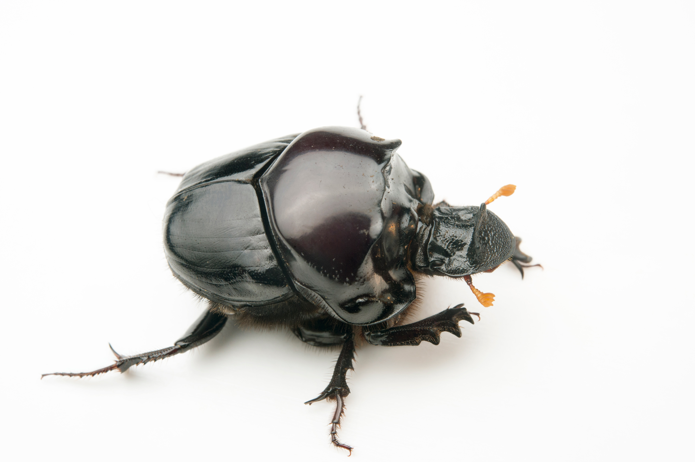
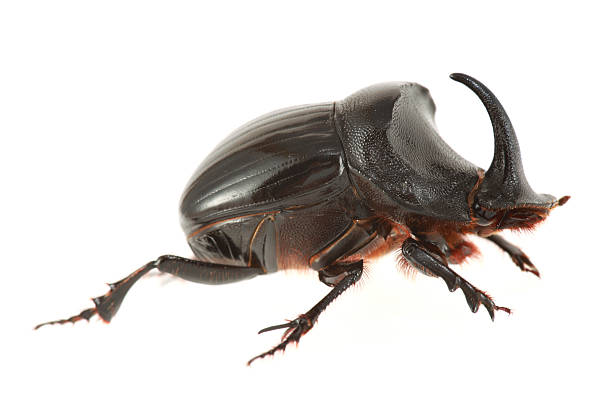
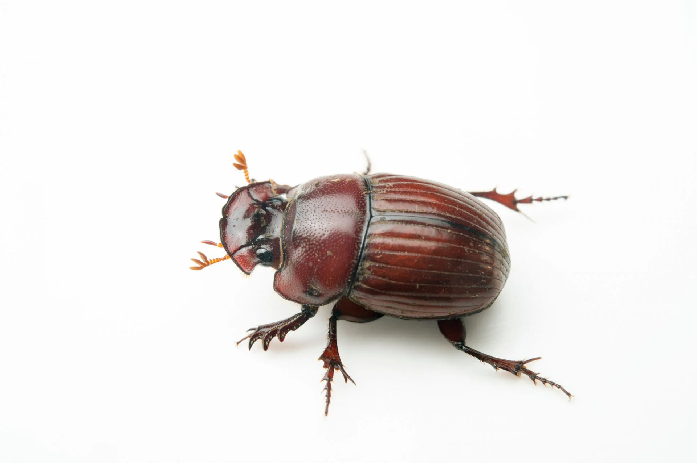

☀️
Dung beetles are fascinating insects best known for their vital role in maintaining healthy ecosystems. As their name suggests, dung beetles feed on animal waste, using it as both a food source and a place to lay their eggs. While this behavior may seem unpleasant, it provides enormous benefits to the environment by breaking down waste that would otherwise accumulate on the ground.
There are several types of dung beetles, including rollers, tunnelers, and dwellers. Rollers shape dung into balls and roll them away to bury underground, while tunnelers dig beneath dung piles and pull portions below the surface. Dwellers live directly inside the dung itself. These different strategies reduce parasites, flies, and harmful bacteria, helping keep grazing areas clean for animals.
Dung beetles also improve soil quality by aerating it and increasing nutrient absorption. By burying dung, they help fertilize the soil and promote healthier plant growth. In agricultural areas, their work can reduce the need for chemical fertilizers and pest control, making them especially valuable to farmers.
Despite their importance, dung beetles are sensitive to environmental changes such as habitat loss and the use of pesticides. Protecting natural landscapes and reducing harmful chemicals can help preserve dung beetle populations. Through their tireless recycling of waste, dung beetles quietly support ecosystems and demonstrate how even the smallest creatures can have a powerful impact on the natural world.


